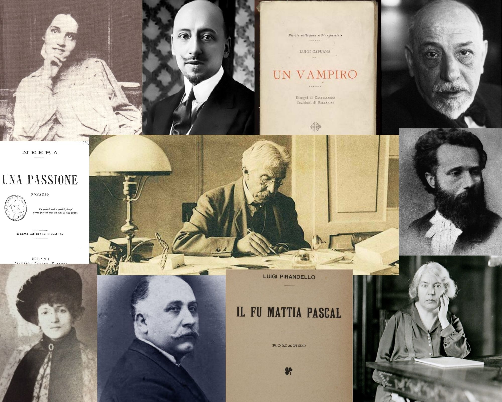

COST Action CA16204, grounded in the Distant Reading paradigm, will create a shared theoretical and practical framework to enable innovative, sophisticated, data-driven, computational methods of literary text analysis across at least 10 European languages.
More infoProgetto ELTec


Distant Reading for European Literary History is a project aiming to create a vibrant and diverse network of researchers jointly developing the resources and methods necessary to change the way European literary history is written.
More info